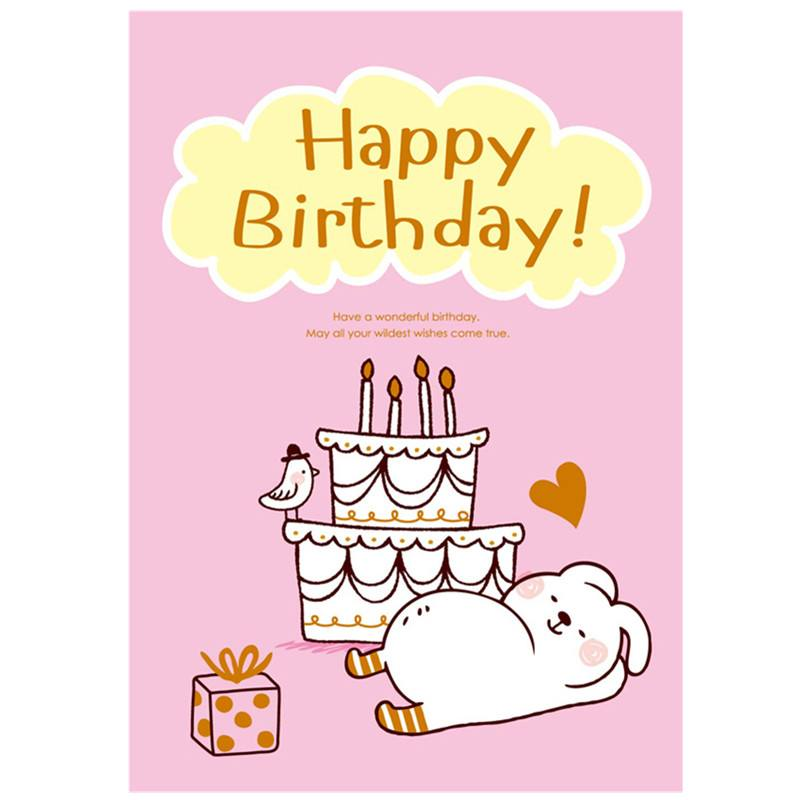

2024-11-10
祝你有人爱，有所期待，不止生日快乐

2024-11-10
名称
生活明朗，万物可爱，你按时长大
我没有带刺的玫瑰，没有优雅的歌曲
没有贵重的礼品，没有例外的惊喜
没有花的芬芳，没有果的甜香;没有烛的明亮，没有歌的嘹亮
祝你生日快乐~万事胜意~心之所向~如愿以偿
2024-10-10
你美丽，聪慧、坚定、贴心、谦虚。很多时候都是优先替别人思考，是一个内心温暖的女孩，能控制好自己的情绪，让生活散发着平静之美。你就像一个礼物一样出现在了我最美好的年华。让我即使在寒冬之中，也能内心温暖。
希望你活出自我，永远积极向上，永远乐观开朗！时间过的很快呀，每一年每一步都在走，不可能停留，但会慢慢沉淀。
2024-11-10
在茫茫碌碌的浮生中偷得那么一段悠闲的日子做做自己想干的事情，真是人生一大趣事。在他的笔下，平常的一茶一饭、一草一木、一人一事，都变得生动有趣。他用文字告诉我们，生活是有诗意的，人间是值得的。

2024-11-10
生来慧质乾坤颂，日吐珠玑盛世夸 快马载福奔万里，乐于送寿到千家
